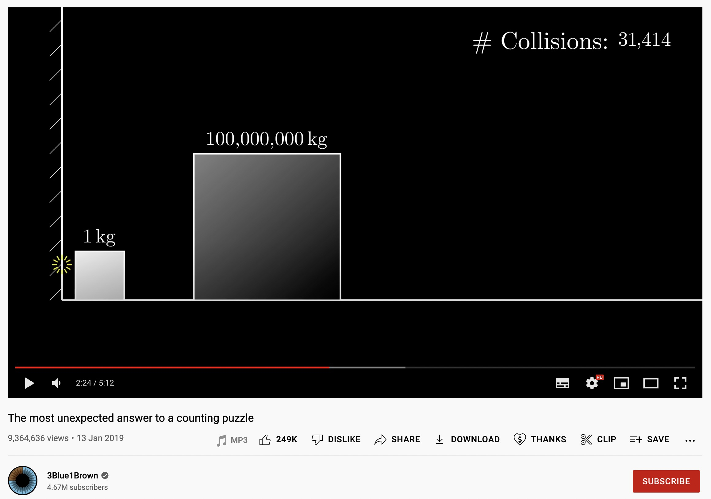
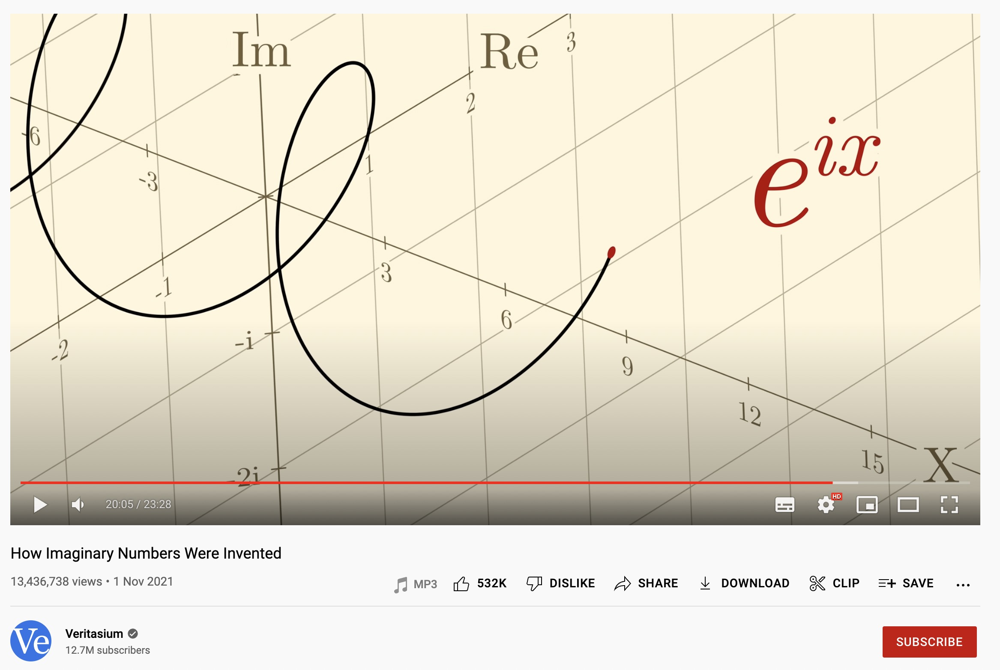
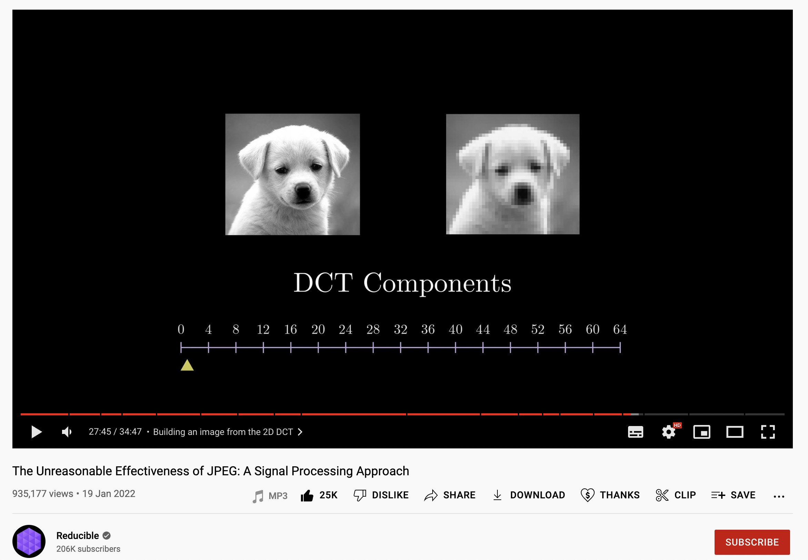
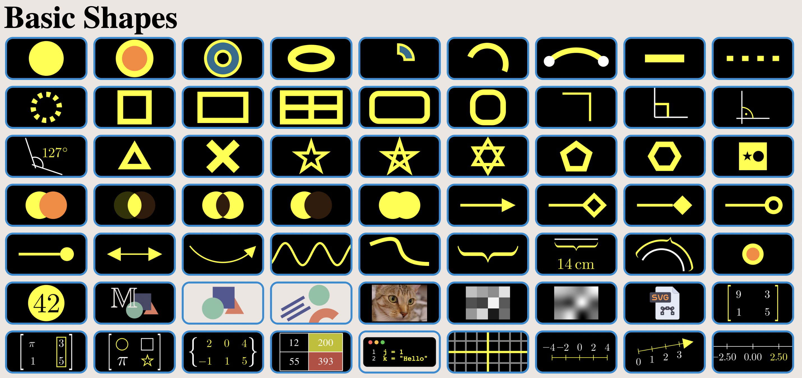

Konzeption physikalischer Animation mit "manim"
Jan-Hendrik Müller
20.1.2023
<div style="font-size: 30px;"> ### Das Tool Manim * **Manim** = **Ma**thematische **Anim**ationen * Koppelt mathematische Formeln intuitiv an Farben und Konturen. * Kostenlose Open Source Software * Python Code-generierte Animationen * sehr gute Anbindung an physikalische und mathematische Python Pakete --- #### Inspirierende Kanäle  ---  ---  --- Dopplereffekt <video data-autoplay width="100%" src="assets/Doppler.mp4"> --- Vektorfeld <div> <video data-autoplay width="100%" src="assets/ScaleVectorFieldFunction.mp4"> </div> --- Doppelpendel <div> <video data-autoplay width="100%" src="assets/DoublePendulum.mp4"> </div> <div style="font-size: 20px; text-align: justify;position: absolute; left: 30px; bottom: -40px; "> Made by [@Sam Maksimovich](https://www.youtube.com/watch?v=n7JK4Ht8k8M) --- ### Wann ist manim geeignet? * Für sehr präzise Animationen * Iteration über Objekte * Zufallsparameter generieren * Anbindung an schon in Python implementierte Physik/Mathe Module * "Latex für Video" <div style="font-size: 30px;"> --- ### Hintergrund * 2015 wurde manim von Grant Sanderson für den YouTube Kanal [3blue1brown](https://youtube.com/3blue1brown) entwickelt. * Seither wird es von einer Community ehrenamtlich weiterentwickelt. </div>
### Bauen von Szenen  --- ### Erste Animation ```py class Example(Scene): def construct(self): dot = Dot(color=YELLOW, radius=0.5) self.play(dot.animate.shift(3*RIGHT).scale(2).set_color(BLUE)) ``` <video width="50%" src="assets/ExampleAni.mp4" controls> ---